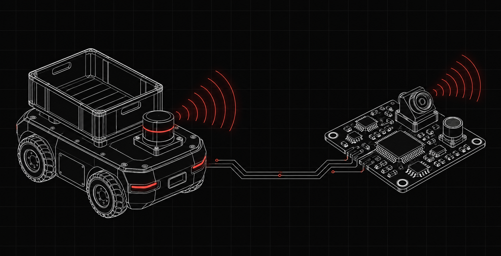

Python SDK
Fetch tasks, submit Rust and Lean, and use raw evaluation metrics to define custom rewards.
FirmwareGym challenges AI agents to build firmware with the h5i framework, prove its behavior in Lean 4, and meet resource budgets on virtual hardware in Renode.

FirmwareGym spans five difficulty levels. Tasks include coordinating warehouse robots, fusing noisy or faulty sensor readings, controlling motors and batteries, scheduling real-time jobs, and storing data on NOR flash.
The full dataset and task catalog are currently private. Hosted access to the full catalog requires an API key.
11 of 18 tasks passed the final evaluation.
| Domain | Passed / attempted | Pass rate |
|---|---|---|
| Control, power & safety | 7 / 7 | 100% |
| Storage | 1 / 2 | 50% |
| Communication | 1 / 3 | 33% |
| Sensor fusion | 1 / 2 | 50% |
| Scheduling & virtual machines | 1 / 3 | 33% |
| Robot coordination | 0 / 1 | 0% |
| Overall | 11 / 18 | 61% |
One agent run per task, with up to 30 minutes and iterative development feedback. The final grader required successful compilation, all Lean obligations and Renode scenarios, any applicable randomized checks, and all resource budgets. A task fails if proof checking cannot complete. Lean thread creation failed during kernel replay for one communication task, and Lean ran out of memory during elaboration for one robot coordination task. Percentages use all attempted tasks and are rounded to whole numbers.
The Python SDK, API specification, and sample tasks are available under Apache 2.0. The hosted evaluator and full task catalog require an API key from your operator. Hosted development feedback and final benchmark evaluation are run separately.
Fetch tasks, submit Rust and Lean, and use raw evaluation metrics to define custom rewards.
Read the evaluation API and response schema.
Run a firmware evaluation and compute a custom reward.
Use evaluation feedback across multiple agent turns.